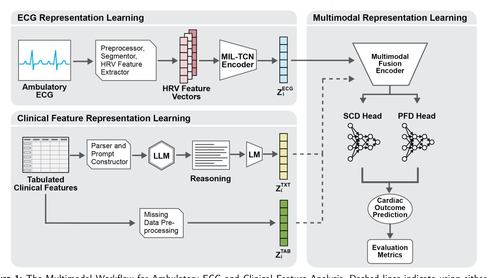
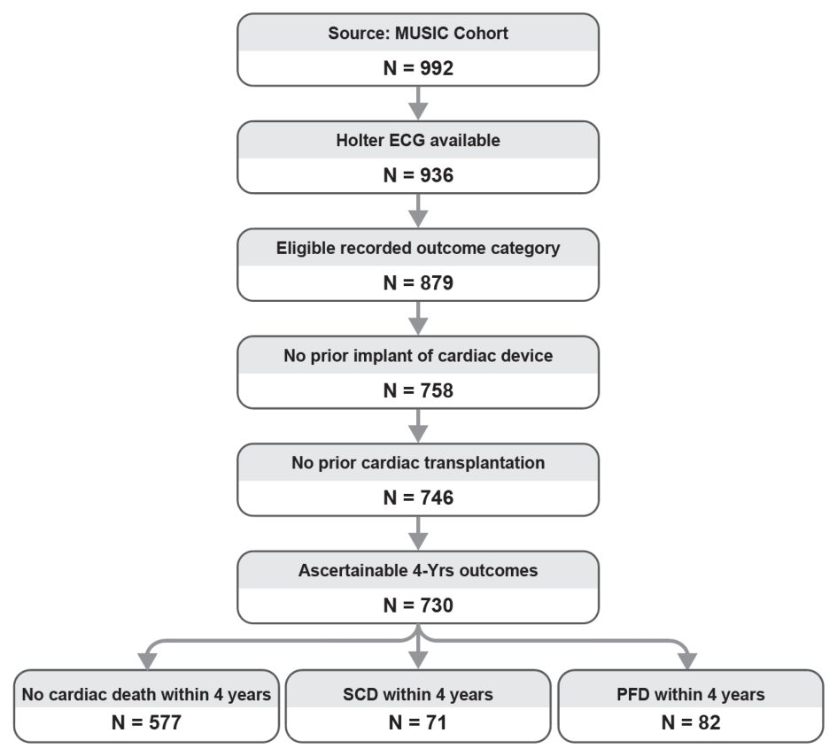
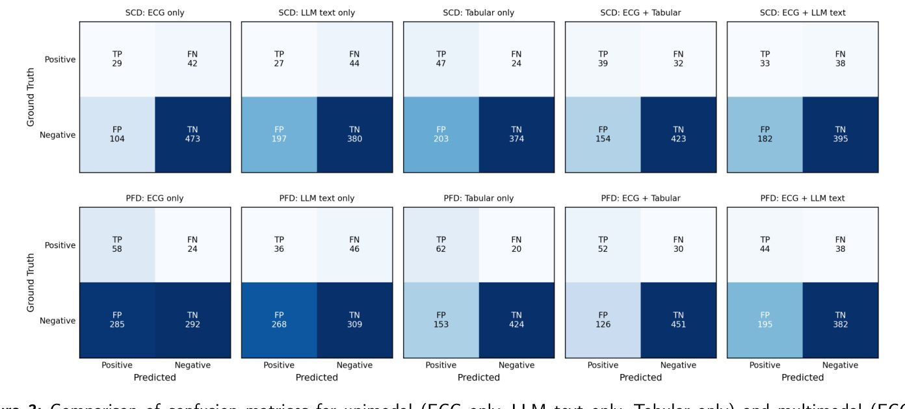
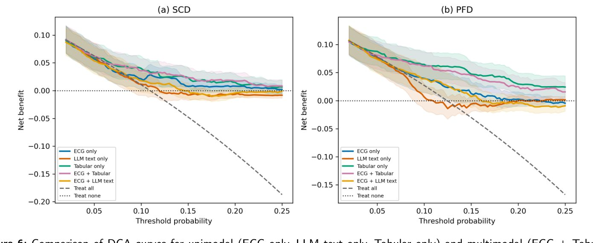
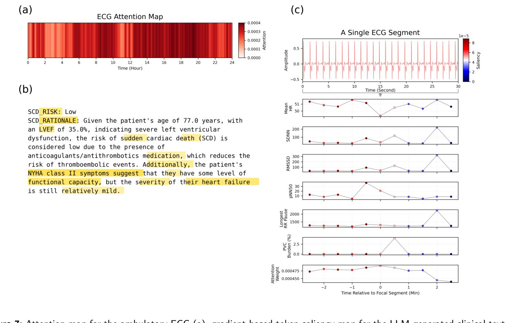
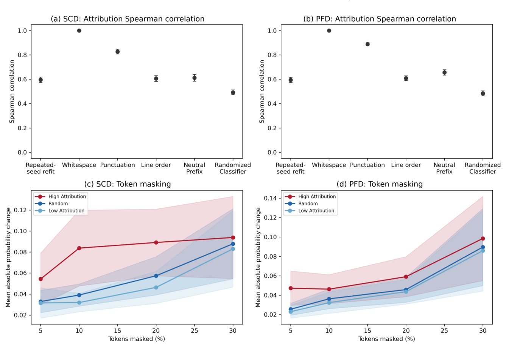

Жасанды интеллект кенеттен болатын жүрек өлімін болжай ала ма


Суреттің толық сипаттамасы
1-сурет. Амбулаториялық ЭКГ жазбаларын клиникалық деректермен бірге талдауға арналған мультимодальды жұмыс процесі. ЭКГ жазбалары алдын ала өңделіп, қысқа терезелерге сегменттеледі. Әрбір терезе үшін жүрек соғысының өзгермелілігі (HRV) көрсеткіштері алынып, Multiple Instance Learning–Temporal Convolutional Network (MIL–TCN) арқылы кодталады, бұл ЭКГ кескінін, 𝜀ECG қалыптастырады. Параллель түрде клиникалық айнымалылар үлкен тілдік модель (LLM) арқылы жасалған мәтін, детерминирленген клиникалық мәтін немесе кестелік белгілер ретінде ұсынылады. LLM жасаған және детерминирленген мәтіндер пациент деңгейіндегі мәтіндік кескіндерді, 𝜀TXT алу үшін биомедициналық мәтіндік кодтағыш арқылы кодталады, ал алдын ала өңделген кестелік айнымалылар кестелік кескінді, 𝜀TAB құрайды. ЭКГ, мәтіндік және кестелік кескіндердің әрқайсысы унимодальды модельдер ретінде бағаланды, ал мәтіндік және кестелік кескіндер кенеттен болатын жүрек өлімін (SCD) және жүрек жеткіліксіздігінен болатын өлімді (PFD) болжау үшін мультимодальды модельдерде ЭКГ кескінімен жеке біріктірілді. Үзік сызықтар мультимодальды біріктіру үшін мәтіндік (TXT) немесе кестелік (TAB) кескінді пайдалануды көрсетеді.
Кенеттен болатын жүрек өлімі мен жүрек жеткіліксіздігі медицинадағы күрделі мәселелердің бірі. Зерттеушілер ЭКГ жазбаларын пациенттердің медициналық карталарымен бірге талдайтын модель жасады. Сандық деректер мен клиникалық ақпараттың үйлесімі тек мәтін немесе тек ЭКГ графиктерін қолданғаннан гөрі тиімдірек екені анықталды.
Басты ойлар
- Модель MIL-TCN нейрондық желісі арқылы ЭКГ сегменттерін талдайды.
- Кенеттен болатын өлімді болжауда ЭКГ мен мәтін комбинациясы тиімді.
- Жүрек жеткіліксіздігі қаупін бағалауда кестелік деректер ең дәл нәтиже берді.
Толығырақ
Авторлар төрт жылдық өлім қаупін бағалау үшін MUSIC когортасындағы 730 пациенттің деректерін пайдаланды. Жүректің электрлік белсенділігін талдау үшін MIL-TCN (уақытша конволюциялық нейрондық желі) архитектурасы қолданылды, ол Холтер мониторингінің 30 секундтық сегменттерін өңдейді. Клиникалық деректер үш форматта ұсынылды: кестелер, нақты мәтіндік сипаттамалар және үлкен тілдік модельдер (LLM) арқылы жасалған есептер.
Нәтижелер көрсеткендей, кенеттен болатын жүрек өлімін (SCD) болжауда ЭКГ мен нақты мәтін комбинациясы 0,711 AUROC көрсеткішіне жетті. Жүрек жеткіліксіздігінен болатын өлім (PFD) үшін кестелік деректерге негізделген модель ең тиімді болды (AUROC 0,787). Зерттеу мультимодальды модельдердің тиімділігі клиникалық деректерді ұсыну тәсіліне қатты тәуелді екенін және қарапайым құрылымдалған форматтар көбінесе күрделі LLM сипаттамаларынан асып түсетінін растады.
Шектеулер
Бұл әлі рецензиядан өтпеген препринт, сондықтан нәтижелерді кеңірек пациенттер тобында тексеру қажет.
Мақаланың толық аудармасы
Түйіндеме
Амбулаториялық электрокардиограммалар (ЭКГ) жүректің электрлік белсенділігін үздіксіз бақылауды қамтамасыз етеді, алайда машиналық оқытудың көптеген тәсілдері бұл жазбаларды пациенттің кеңірек клиникалық контекстін ескермей талдайды. Біз кенеттен болатын жүрек өлімін (КЖӨ) және жүрек жеткіліксіздігінен болатын өлімді (ЖЖӨ) төрт жылдық кезеңге болжау үшін амбулаториялық ЭКГ-дан алынған көріністерді клиникалық ақпаратпен біріктіретін мультимодальды құрылымды бағаладық. Талдау MUSIC когортасынан 730 пациентті қамтыды, оның ішінде 71 КЖӨ және 82 ЖЖӨ жағдайы бар. Амбулаториялық ЭКГ жазбалары сегменттерге бөлініп, multiple instance learning – уақытша конволюциялық нейрондық желі көмегімен кодталды, ал клиникалық айнымалылар үлкен тіл моделі (LLM) арқылы жасалған мәтін, детерминирленген мәтін немесе кестелік белгілер ретінде ұсынылды.
Түсіндірме
Multiple instance learning — машиналық оқыту әдісі, мұнда модель жеке объектілерді емес, объектілер топтарын («қаптарды») жіктейді, бұл ЭКГ жазбаларын талдауға қолайлы.
Модельдер бес сыртқы және төрт ішкі қабатты пациент деңгейіндегі өзара тексеру (nested cross-validation) көмегімен әзірленіп, бағаланды; бұл ретте деректерді алдын ала өңдеу, модель мен біріктіру архитектурасын таңдау, калибрлеу және шекті мәндерді таңдау тек оқыту деректерімен шектелді. КЖӨ үшін ЭКГ мен детерминирленген мәтін комбинациясы 0,711 (95% CI, 0,643–0,773) ең жоғары AUROC-қа қол жеткізді, ал ЭКГ мен кестелік клиникалық белгілер 0,248 (0,180–0,357) ең жоғары PR-AUC көрсетті. ЖЖӨ үшін унимодальды кестелік модель 0,787 (0,732–0,839) AUROC және 0,360 (0,275–0,470) PR-AUC-пен ең жоғары нәтиже көрсетті, ал ЭКГ мен кестелік белгілер 0,756 (0,697–0,811) AUROC және 0,353 (0,261–0,461) PR-AUC көрсетті. ЭКГ мен LLM мәтінінің комбинациясы тек LLM мәтінінен гөрі жақсы нәтиже берді, бірақ унимодальды ЭКГ моделінен асып түскен жоқ.
Маңызды
ЭКГ мен клиникалық деректердің мультимодальды интеграциясы деректерді ұсыну түріне тәуелді екенін көрсетті: детерминирленген және кестелік форматтар LLM арқылы жасалған мәтіндерге қарағанда болжамдық тұрғыдан құндырақ болды.
Атрибуция мен токендерді маскалау талдаулары модель түсіндірмелерінің кіріс деректерінің үстірт өзгерістеріне ішінара төзімді екенін, сонымен бірге модель мен маскалау шарттарына сезімтал болып қалғанын дәлелдейтін қосымша айғақтар берді. Көріністер мен пациент мәтіндерінің ауыстырылуын талдау болжамдық құндылықтың клиникалық ақпараттың қалай ұсынылғанына қатты тәуелді екенін көрсетті. Бұл нәтижелер мультимодальды интеграцияның артықшылығы нәтиже мен деректерді ұсыну әдісіне байланысты екенін көрсетеді.
Абайлаңыз
Зерттеу бақылау сипатында (MUSIC когортасы), сондықтан анықталған байланыстар себеп-салдарлық қатынасты дәлелдемейді; нәтижелер клиникалық деректерді ұсыну әдістерінің ерекшелігіне байланысты.
Кіріспе
Кенеттен болатын жүрек өлімі (КБЖӨ) және жүрек жеткіліксіздігінен болатын өлім (ЖЖӨ) жүрек жеткіліксіздігі кезіндегі өлімнің екі негізгі себебі болып табылады. Фармакологиялық терапия мен медициналық құрылғылардағы жетістіктерге қарамастан, бұл нәтижелердің жоғары қаупі бар адамдарды дәл анықтау клиникалық мәселе болып қала береді. Амбулаториялық электрокардиограммалар (ЭКГ), соның ішінде ұзақ мерзімді Холтер мониторингі, жүрек ырғағын үздіксіз бағалауды қолдайды, өтпелі аритмияларды, эктопиялық жүктемені және мезгіл-мезгіл болатын өткізгіштік бұзылыстарын тіркейді. Бұл өтпелі ауытқулар КБЖӨ мен ЖЖӨ қаупін бағалау үшін маңызды прогностикалық ақпаратты қамтиды.
Маңызды
Кенеттен болатын жүрек өлімі мен жүрек жеткіліксіздігінен болатын өлім маңызды мәселелер болып табылады, ал амбулаториялық ЭКГ болжау үшін маңызды, бірақ түсіндіруге қиын деректерді ұсынады.
Алайда, амбулаториялық ЭКГ жазбаларын ұзақ мерзімді жүрек өлімінің сенімді және клиникалық тұрғыдан іске асырылатын болжаушыларына айналдыру күнделікті тәжірибеде күрделі және ресурсты қажет ететін процесс болып қала береді. Машиналық оқыту (МО) және жасанды интеллект (ЖИ) модельдері бұл мәселелерді шешуде ерте уәделер берді. ЖИ/МО модельдері толқын морфологиясын (мысалы, P толқындары, QRS ұзақтығы) сипаттауда және аритмия оқиғаларын (мысалы, жүрекшелер фибрилляциясы, жүрекшелер дірілі) анықтауда күшті қабілетті көрсетті. Сонымен қатар, үлкен тіл модельдері (ҮТМ) құрылымдалған және құрылымдалмаған деректер жиынтығында пайымдау қабілетін көрсетті. Доменге бейімделген медициналық ҮТМ клиникалық белгілерді (мысалы, демография, медициналық тарих, зертханалық мәндер) синтездеп, биомедициналық пайымдауларды жасай алады.
Түсіндірме
ҮТМ (LLM) — бұл үлкен көлемдегі мәтіндер негізінде оқытылған, медициналық карталарды талдап, сарапшылар сияқты логикалық қорытындылар жасай алатын алгоритмдер.
Бұл жетістіктерге қарамастан, маңызды олқылықтар сақталуда. Амбулаториялық ЭКГ талдауы үшін көптеген ЖИ/МО модельдері бірыңғай модальды (unimodal) болып табылады, олар негізінен пациенттің кеңірек контекстін қоспастан, ЭКГ жазбасындағы өрнектерді анықтауға бағытталған. Алдыңғы зерттеулер клиникалық контексттің ЭКГ-ны түсіндіруге дәрігерлер де, ЖИ/МО модельдері де әсер ете алатынын көрсетеді. Сондықтан ЭКГ жазбаларын пациент деңгейіндегі клиникалық ақпаратпен интеграциялау нәтижелерді болжау үшін қосымша ақпаратты ұсына алады. Алайда, мультимодальды интеграция өнімділікті автоматты түрде жақсартпайды: оның құндылығы нәтижеге, әрбір модальдылықтың өкілдігіне, деректердің бір-бірімен сәйкес келу дәрежесіне және біріктіру стратегиясына байланысты болуы мүмкін. Сондықтан, мультимодальды тәсілдер қашан мағыналы нәтижелерді ұсынатынын және қашан ұсынбайтынын анықтау үшін бірыңғай модальды және дәстүрлі құрылымдалған деректер модельдерімен қатаң салыстырулар қажет.
Абайлаңыз
Мультимодальды модельдер әрқашан бірыңғай модальды модельдерден артық емес; олардың табысы деректер сапасы мен оларды біріктіру стратегиясына байланысты, бұл мұқият тексеруді талап етеді.
Осы қажеттілікті қанағаттандыру үшін біз амбулаториялық ЭКГ жазбаларынан алынған пациент деңгейіндегі өкілдіктерді құрылымдалған айнымалылар, детерминирленген мәтін немесе ҮТМ жасаған бағалаулар ретінде көрсетілген клиникалық ақпаратпен біріктіретін мультимодальды жүйені әзірледік және жүйелі түрде бағаладық. Біз клиникалық пайдалану жағдайы ретінде КБЖӨ мен ЖЖӨ-ні төрт жылдық болжауды қолдандық. Біз жалпы ішкі өзара тексеру (nested cross-validation) шеңберінде бірыңғай модальды және мультимодальды тәсілдерді салыстырдық және өнімділіктің нәтижелер мен клиникалық өкілдіктер бойынша қалай өзгеретінін тексердік. Бұл зерттеудің негізгі үлестері төмендегідей: 1. Төрт жылдық КБЖӨ мен ЖЖӨ болжамы үшін амбулаториялық ЭКГ, кестелік клиникалық айнымалылар, детерминирленген клиникалық мәтін және ҮТМ жасаған клиникалық бағалаулардың қатаң бенчмаркі, соның ішінде бірыңғай модальды модельдер мен ЭКГ-клиникалық синтез модельдері. 2. Мультимодальды синтез стратегиялары, соның ішінде конкатенация, проекцияланған конкатенация, скалярлық гейтинг, векторлық гейтинг және салмақталған қосынды тек оқу деректерін пайдалана отырып салыстырылған және таңдалған ішкі өзара тексеру жүйесі, бұл модель таңдаудағы бұрмалаушылықты азайта отырып, мультимодальды интеграцияны бағалауға мүмкіндік береді. 3. Құрылымдалған айнымалыларды қайта баяндаудан немесе қайталаудан қосымша мультимодальды ақпаратты ажыратуға арналған өкілдік және беріктік талдауларының жиынтығы, соның ішінде дәстүрлі кестелік модельдермен, детерминирленген мәтінмен, пайымдау және қауіп белгілерінің абляцияларымен, ЭКГ-үсті-үстіне түсу талдауларымен, пациент-мәтін алмасуымен, сондай-ақ атрибут тұрақтылығы мен пертурбация талдауларымен салыстырулар.
2. Қатысты жұмыстар
2.1. Амбулаториялық ЭКГ талдауы
Ерте есептеу зерттеулері амбулаториялық ЭКГ өрнектерін жүрек фенотиптерімен байланыстыру үшін уақыт және жиілік доменіндегі белгілерді бөліп алуға баса назар аударды. Badilini және басқалар [26] циркадиялық өзгерістер мен бета-блокатор әсерін бағалау үшін спектрлік талдауды қолданды, ал Bakhshi және басқалар [27] аритмияларды синустық ырғақтан ажырату үшін екінші ретті авторегрессиялық модельдеу мен сызықтық классификацияны пайдаланды. Жақында жасалған жұмыстар өкілдікті оқыту мен ырғақ классификациясын автоматтандыру үшін терең оқытуды (deep learning) қабылдады. Huang және басқалар [28] ЭКГ сегменттерін спектрограммаларға айналдырды және ырғақ классификациясы үшін екі өлшемді конволюциялық нейрондық желілерді қолданды, ал Biton және басқалар [29] RR интервалдары бойынша уақытша тәуелділіктерді модельдеу үшін Ar-Net2-ні ұсынды. Ben-Moshe және басқалар [30] таралу ығысуларын шешу және 30 секундтық жазбалардан тікелей жүрекшелер фибрилляциясын анықтау үшін RawECGNet-ті ұсынды. Han және басқалар [31] аритмияны анықтау үшін Gramian Angular Field өкілдіктерін көп мысалды оқытумен (multiple instance learning) біріктірді. Sameh және басқалар [32] уақытша контекст пен амбулаториялық ЭКГ-ның алдыңғы өкілдігін өзгерту жүрекшелер фибрилляциясы мен жүрекшелер дірілін анықтауға қалай әсер ететінін зерттеді.
Бұл тәсілдер бойынша амбулаториялық ЭКГ жазбалары әдетте қысқарақ сегменттер жиынтығы ретінде талданады, болжамдар сегмент деңгейінде жасалады және кейбір жағдайларда жазба деңгейіндегі нәтижелерді алу үшін көп мысалды оқыту сияқты механизмдер арқылы біріктіріледі. Алайда, бұл стратегиялар көбінесе локализацияланған ырғақты анықтаумен шектеледі.
2.2. LLM және мультимодальды интеграция
LLM және пәндік салаға бейімделген тілдік модельдер клиникалық мәтіндерді түсіну және шешім қабылдауды қолдау қосымшаларындағы пайдалылығы үшін зерттелді. Ли және авторлар BioBERT-ті ұсынды, ал Хуан және авторлар ClinicalBERT-ті әзірледі; екі модель де клиникалық баяндаулар мен электронды медициналық карталардың құрылымдалған деректерін кодтауды жақсарту үшін трансформер архитектурасын биомедициналық және клиникалық корпустарға бейімдеу мақсатында салалық алдын ала оқытуды пайдаланады. Жақында Се және авторлар Me-LLaMA-ны ұсынды, ал Ли және авторлар LLaVA-Med-ті таныстырды, олар пациенттер туралы гетерогенді ақпарат негізінде қорытындылау, сұрақтарға жауап беру және нәтижелерді болжау сияқты жоғары деңгейлі клиникалық пайымдауды қамтамасыз ету үшін нұсқаулықтарды баптау және мультимодальды сәйкестендіру стратегияларын зерттеді.
Ян және авторлар аритмиялық оқиғаларды жіктеу және емдеу стратегияларын ұсыну үшін қысқа мерзімді ЭКГ мен клиникалық жазбаларды өңдейтін ECG-LM-ді құрды. Бұл тәсілдер тілдік модельдерді мәтіндік деректерге және кейбір жағдайларда қысқа мерзімді ЭКГ сигналдарына қолданады, бұл ретте бірінші кезекте репрезентацияны оқыту және аритмияны жіктеу міндеттеріне назар аударылады. Біздің білуімізше, пациенттің клиникалық контекстін 24 сағаттық амбулаторлық ЭКГ сигналдарымен интеграциялау бойынша жұмыстар шектеулі.
Маңызды
Қолданыстағы модельдер (BioBERT, ClinicalBERT, Me-LLaMA, LLaVA-Med, ECG-LM) мәтіндермен және қысқа ЭКГ жазбаларымен сәтті жұмыс істейді, алайда клиникалық контекстті 24 сағаттық ЭКГ мониторингімен интеграциялау әлі де аз зерттелген сала болып табылады. [!tip] LLM (Large Language Models) — бұл үлкен мәтіндік деректер базасында оқытылған, адам тілін түсінуге және генерациялауға қабілетті нейрондық желілер, ал мультимодальдылық модельдің бір уақытта әртүрлі деректер түрлерін, мысалы, мәтін мен ЭКГ графиктерін өңдеу қабілетін білдіреді.
Талқылау
Нәтижелерді талқылау
Біз амбулаториялық ЭКГ-дан алынған көріністерді клиникалық мәтінмен және кестелік деректермен біріктіретін мультимодальды интеграция стратегияларын жүйелі түрде бағаладық. Мультимодальды интеграция әрқашан бірдей тиімді бола бермейді және клиникалық ақпараттың ұсынылу тәсіліне қатты тәуелді. SCD (кенеттен болатын жүрек өлімі) үшін ЭКГ мен детерминирленген мәтін комбинациясы ең жоғары AUROC көрсеткішіне қол жеткізді, ал ЭКГ мен кестелік клиникалық белгілердің комбинациясы PR-AUC бойынша ең жақсы нәтиже көрсетті. PFD (прогрессивті жүрек жеткіліксіздігі) үшін унимодальды кестелік модель жалпы алғанда ең тиімді болып қалды, ал ЭКГ мен кестелік белгілердің комбинациясы унимодальды ЭКГ моделінен айтарлықтай асып түссе де, тек кестелік белгілердің өзінен озып кетпеді. ЭКГ мен LLM арқылы жасалған толық мәтін комбинациясы екі нәтиже үшін де унимодальды LLM моделіне қарағанда жақсаруды көрсетті, бірақ унимодальды ЭКГ моделінен асып түспеді. Унимодальды клиникалық көріністер арасында детерминирленген және кестелік деректер, әсіресе PFD үшін, LLM арқылы жасалған толық бағалауға қарағанда жоғарырақ дискриминациялық қабілетті қамтамасыз етті.
Маңызды
Мультимодальды модельдердің тиімділігі клиникалық деректерді ұсыну тәсіліне байланысты: кестелік белгілер көбінесе SCD және PFD-ді болжауда LLM жасаған мәтіндік сипаттамалардан басым түседі.
Бұл нәтижелер клиникалық контекст амбулаториялық ЭКГ деректерін толықтыра алатынын көрсетеді, алайда оның болжамдық құндылығы нәтижеге де, қолданылған ұсыну тәсіліне де байланысты. Болжамдық тиімділіктен бөлек, біз мультимодальды модельдердегі ЭКГ назары мен мәтін маңыздылығының пациент деңгейіндегі визуализациясын ұсындық. Модель назар аударатын ЭКГ сегменттерін жүрек соғысы жиілігінің өзгермелілік белгілерімен және клиникалық мәтінмен байланыстыра отырып, бұл талдаулар модельдің жеке болжамдарымен байланысты ерекшеліктерді айқындайды. Атрибуция рейтингтері кіріс деректеріндегі үстірт өзгерістерге қатысты салыстырмалы түрде тұрақты, бірақ оқытылған модель параметрлеріндегі өзгерістерге сезімтал болды. Токендерді маскалау талдауы градиенттік атрибуция бойынша ең жоғары деңгейдегі токендерді маскалау әдетте кездейсоқ таңдалған токендерді маскалауға қарағанда болжанған ықтималдықта үлкен өзгерістерге әкелетінін көрсетті, дегенмен бұл айырмашылықтың шамасы нәтиже мен маскалау үлесіне қарай өзгерді.
Түсіндірме
Атрибуция (attribution) — жасанды интеллектіні түсіндіру әдісі, ол қай кіріс деректері (мысалы, ЭКГ сегменттері немесе мәтіндегі сөздер) модель шешіміне ең үлкен үлес қосқанын анықтауға мүмкіндік береді.
Көріністер мен беттесулер бойынша абляциялар детерминирленген мәтін мен тікелей кестелік клиникалық айнымалылар LLM жасаған толық бағалауға қарағанда көбірек болжамдық ақпаратты сақтайтынын көрсетті. ЭКГ қорытындыларын қосу кестелік тиімділікке айтарлықтай әсер етпеді және PFD үшін SCD-ге қарағанда LLM көрінісі үшін пайдалырақ болды. Мұның мүмкін түсіндірмелерінің бірі — ырғақ бұзылыстары жүрек жеткіліксіздігінің ауырлығы мен жүрек резервінің төмендеуі белгілері үшін қосымша контекст қамтамасыз ете алады, бұл прогрессивті сорғы жеткіліксіздігімен тікелей байланысты, ал SCD негізінде жатқан гетерогенді аритмиялық субстрат Холтер мониторингінің осы бес категориялық қорытындыларымен толық қамтылмауы мүмкін. Алайда, бұл түсіндірме бастапқы болып табылады, әсіресе бірдей ЭКГ қорытындыларын кестелік модельдерге қосу екі нәтиже үшін де онша үлкен емес тиімділік өзгерістеріне әкелгендіктен. Сонымен қатар, «пациент-мәтін» сәйкестігін араластыру ЭКГ мен LLM синтезінің тиімділігіне аз әсер етті, бұл толық LLM мәтіндік көрінісінде пациентке тән сәйкестікті сақтау осы талдау аясында тиімділіктің өлшенетін пайдасын бермегенін көрсетеді.
Абайлаңыз
Зерттеу бір деректер жиынтығына негізделген, бұл нәтижелерді жалпылау мүмкіндігін шектейді; сондай-ақ SCD және PFD оқиғаларының аздығы модельдердің тұрақтылығын төмендетуі мүмкін.
Шешім қабылдау қисықтарын зерттеу талдауы көрініске тәуелді осындай заңдылықты көрсетті. Бастапқы кестелік клиникалық белгілерді қамтитын модельдер «бәрін емдеу» және «емдемеу» стратегияларына қатысты оң таза пайданың ең кең аймақтарын көрсетті, әсіресе PFD үшін, ал ЭКГ мен толық LLM мәтіні бағаланған шекті аралықта шектеулі пайда көрсетті. Бұл шектер зерттеу сипатында болғандықтан және расталған араласу стратегиясымен байланысты болмағандықтан, бұл нәтижелерді нақты емдеу шегі үшін дәлел ретінде емес, әлеуетті клиникалық пайдалылықтың салыстырмалы бағасы ретінде түсіндіру керек. Бірнеше шектеулерді ескеру қажет. Біріншіден, зерттеу бір деректер жиынтығында жүргізілді; жалпылау мүмкіндігін бағалау үшін сыртқы валидация қажет. Екіншіден, SCD және PFD оқиғаларының салыстырмалы түрде шектеулі саны модельдің сенімділігін шектеуі мүмкін, әсіресе сирек кездесетін нәтижелерді болжау үшін. Үшіншіден, ағымдағы жүйе толық end-to-end шикі сигналды модельдеудің орнына әзірленген HRV белгілеріне сүйенеді, бұл толқын пішіні деңгейіндегі күрделірек ақпаратты қамтуды шектеуі мүмкін. Сонымен қатар, тіл моделі жасаған пайымдаулардың сапасы мен дәйектілігі мәтіндік көріністерге өзгермелілікті енгізуі мүмкін. Болашақ жұмыстар бұл тәсілдерді тәуелсіз когорталарда бағалауы, end-to-end шикі ЭКГ көріністерін тексеруі және уақыт қатарлары мен клиникалық көріністер арасындағы толықтырушы сәйкестікті зерттеу әдістерін іздеуі керек.
Қорытынды
Біз амбулаторлық ЭКГ деректерін әртүрлі клиникалық ақпарат формаларымен біріктіріп, төрт жылдық кезеңге арналған кенеттен болатын жүрек өлімі (КЖӨ) мен жүрек жеткіліксіздігінен болатын өлімді (ЖЖӨ) болжауға арналған мультимодальды жасанды интеллект жүйесін ұсынамыз. Мультимодальды интеграция барлық модальдіктер үшін біркелкі емес, таңдалған нәтиже мен ұсыну комбинациялары үшін тиімдірек болды. КЖӨ үшін ЭКГ мен детерминирленген мәтін комбинациясы ең жоғары AU-ROC көрсеткішіне қол жеткізді, ал ЭКГ мен кестелік клиникалық белгілер комбинациясы ең жоғары PR-AUC көрсеткішін көрсетті; ЖЖӨ үшін унимодальды кестелік модель ең мықты болып қалды. ЭКГ мен толық LLM мәтінінің комбинациясы тек LLM мәтініне қарағанда жақсы нәтиже берді, бірақ унимодальды ЭКГ моделінен асып түсе алмады. Детерминирленген және кестелік ұсыныстар әдетте толық LLM арқылы жасалған бағалауға қарағанда көбірек болжамды ақпаратты сақтап қалды, ал пациент-мәтін ауыстырылымдары толық LLM мәтіні ішінде пациентке тән хат алмасуды сақтаудан келетін өлшенетін пайданың шектеулі екенін көрсетті. Назар аудару, атрибуция және токендерді маскалау талдаулары модельдің мінез-құлқы туралы қосымша мәліметтер берді және түсініктемелердің модель таңдауы мен деректердегі өзгерістерге сезімталдығын атап өтті. Жалпы алғанда, бұл нәтижелер мультимодальды жүрек нәтижелерін болжауда модальдікті таңдау мен клиникалық ақпаратты ұсынудың маңыздылығын көрсетеді және сыртқы когорталарда ұсынуға негізделген мультимодальды тәсілдерді одан әрі бағалауды қолдайды.
Маңызды
Мультимодальды интеграция әрқашан унимодальды модельдерден басым емес; детерминирленген және кестелік деректер LLM мәтіндеріне қарағанда көбірек болжамды құндылыққа ие.
Түсіндірме
AU-ROC және PR-AUC — модельдің жіктеу сапасын бағалайтын метрикалар; олар модельдің сыныптарды ажырату қабілеті мен сирек кездесетін оқиғаларды анықтау дәлдігін өлшейді.
Абайлаңыз
Зерттеу болжамды модель (TRIPOD+AI) болып табылады; нәтижелер клиникалық маңыздылығын растау үшін тәуелсіз когорталарда сыртқы тексеруді талап етеді.
Кесте 1. Тәуекелді бағалау нұсқаулығы
| Параметр | Шығыс пішімі |
|---|---|
| SCD тәуекелі (4 жыл) | SCD_RISK: <Low/Moderate/High> |
| SCD негіздемесі | SCD_RATIONALE: <қысқаша негіздеме> |
| PFD тәуекелі (4 жыл) | PFD_RISK: <Low/Moderate/High> |
| PFD негіздемесі | PFD_RATIONALE: <қысқаша негіздеме> |
SCD — кенеттен болатын жүрек өлімі; PFD — жүрек жеткіліксіздігінен болатын өлім.
Кесте 2. Жалпы бағалау ережелері
| Ереже | Сипаттама |
|---|---|
| Бастапқы деректер | Тек ұсынылған 24 сағаттық Холтер мониторингі деректерін пайдалану |
| Шектеулер | Жоқ ақпаратты ойдан шығармау және болжамау |
| Тыйым салынады | Пациенттің нәтижесін, бақылау ұзақтығын, өлім себебін немесе кейінгі оқиғаларды пайдалану |
| Пішім | Шығыс пішімін қатаң сақтау, емдеу бойынша ұсыныстар қоспау |
Әдістер
3.3. Кестелік клиникалық белгілер модельдері
Құрылымдалған клиникалық айнымалыларды мәтінге түрлендіру олардың болжамдық құндылығын сақтайтынын немесе жақсартатынын бағалау үшін сол айнымалылар тікелей кестелік түрде модельденді. Бастапқы кестелік шарт ЭКГ ақпаратынсыз LLM промпттарын құру үшін қолданылған базалық демографиялық деректерді, клиникалық сипаттамаларды, медициналық тарихты, зертханалық өлшемдерді, жүрек функциясын және дәрі-дәрмектерді қамтыды. Екінші шарт ЭКГ-ны қамтитын промптта қолданылған бес Холтер-ЭКГ әсерін қосымша қамтыды: қарыншалық экстрасистолия, қарыншалық тахикардия, тұрақты емес қарыншалық тахикардия, пароксизмальды жүрекше үсті тахиаритмиясы және брадикардия. ЭКГ-ны қамтитын бұл кестелік шарт тек абляция ретінде бағаланды және негізгі кестелік талдауларда қолданылмады. Жоғалған деректерді толтыру үшін үздіксіз айнымалылар олардың медианалық мәндерімен ауыстырылды және жетіспеушілік индикаторларымен толықтырылды, ал жоғалған бинарлық және категориялық мәндер бөлек категория ретінде ұсынылды. Үздіксіз айнымалылар кейіннен орташа мәні нөлге және стандартты ауытқуы бірге тең болатындай етіп стандартталды, ал бинарлық және категориялық айнымалылар one-hot кодтаудан өтті. Барлық алдын ала өңдеу параметрлері тек модельді сәйкестендіру үшін қолжетімді деректерді пайдалана отырып бағаланды және бағалау кезінде өзгеріссіз қолданылды. Сонымен қатар, екі дәстүрлі кестелік модельдер тобы бағаланды: L2-пенализацияланған логистикалық регрессия және гистограммаға негізделген градиенттік бустинг. SCD және PFD болжамы үшін бөлек модельдер құрылды.
3.4.1. ЭКГ, мәтін және кестелік көріністерді дайындау
\beth0, \beth8 және \beth. ЭКГ, мәтін және кестелік көріністердің өлшемдерін белгілесін. ЭКГ модальділігі үшін оқытылған MIL–TCN энкодері мұздатылды және әрбір пациент үшін назар аударумен біріктірілген (attention-pooled) шығыстан алынған пациент деңгейіндегі \varepsilonECG \in \mathbbR\beth0 көрінісі бөліп алынды. Мәтіндік модальділік үшін \varepsilonTXT \in \mathbbR\beth8 эмбеддингтері мұздатылған биомедициналық мәтіндік энкодерден алынды. Оларға LLM арқылы жасалған тәуекел бағалары мен детерминистік клиникалық мәтін эмбеддингтері кірді. Кестелік модальділік үшін \varepsilonTAB \in \mathbbR\beth. жоғарыда сипатталғандай, стандартталған үздіксіз айнымалыларды, үздіксіз айнымалылардың жетіспеушілік индикаторларын және one-hot кодталған категориялық айнымалыларды қамтитын алдын ала өңделген клиникалық белгілер векторы болды. Кестелік көрініс оқытылған кестелік классификатордан бөліп алынбай, тікелей қолданылды. Сонымен қатар, ЭКГ көрінісі LLM жасаған мәтінмен, детерминистік мәтінмен және кестелік клиникалық көріністермен бөлек жұптастырылды. Бұл модальділікке тән көріністер төменде сипатталған мультимодальды синтез модельдері үшін кіріс деректері ретінде қызмет етті.
Түсіндірме
One-hot кодтау — категориялық деректерді бинарлық векторларға түрлендіру әдісі, мұнда тек бір элемент 1-ге, қалғандары 0-ге тең болады, бұл машиналық оқыту модельдеріне сандық емес белгілермен тиімді жұмыс істеуге мүмкіндік береді.
3.4.2. Мультимодальды синтез стратегиялары
\vartheta пациенті үшін ЭКГ көрінісі \varepsilonECG және мәтіндік көрініс \varepsilonTXT берілген жағдайда, біз біріктірілген $\varepsilon_{ abla \vartheta} көрінісін өндіру үшін бес мультимодальды синтез стратегиясын бағаладық. Сол стратегиялар \varepsilon_{TXT}-ті сәйкес алдын ала өңделген кестелік көрініс \varepsilon_{TAB}-пен ауыстыру арқылы ЭКГ–кестелік синтез үшін қолданылды. Тікелей конкатенация (DC) модальділікке тән көріністерді проекциясыз біріктіреді: \varepsilon_{ abla \vartheta} = [\varepsilon_{ECG} \oplus \varepsilon_{TXT}]. (8) Проекцияланған конкатенация (PC) алдымен әрбір модальділікті ортақ латенттік кеңістікке карталайды: \beth_{ECG} = W_0 \varepsilon_{ECG} + b_0, \beth_{TXT} = W_8 \varepsilon_{TXT} + b_8, (9a) \varepsilon_{ abla \vartheta} = [\beth_{ECG} \oplus \beth_{TXT}], (9b) мұнда W_0 және W_8 оқытылған проекциялау матрицалары болып табылады. Скалярлық гейтинг (SG) екі проекцияланған көрініспен шартталған пациентке тән скалярлық гейтті пайдаланады: g_{\vartheta} = \sigma \{ w_g^T [\beth_{ECG} \oplus \beth_{TXT}] + b_g \}, (10a) \varepsilon_{ abla \vartheta} = g_{\vartheta} \beth_{ECG} + (1 - g_{\vartheta}) \beth_{TXT}. (10b) Векторлық гейтинг (VG) екі модальділікпен шартталған пациентке тән гейтинг векторын есептейді: g_{\vartheta} = \sigma \{ W_g [\beth_{ECG} \oplus \beth_{TXT}] + b_g \}, (11a) \varepsilon_{ abla \vartheta} = g_{\vartheta} \star \beth_{ECG} + (1 - g_{\vartheta}) \star \beth_{TXT}, (11b) мұнда \star элементтік көбейтуді білдіреді. Салмақты қосынды (WS) проекцияланған көріністерді бір ғана жаһандық оқытылған қоспа салмағын пайдаланып біріктіреді: \varepsilon_{ abla \vartheta} = \lambda \beth_{ECG} + (1 - \lambda) \beth_{TXT}, \lambda = \sigma(s), (12) мұнда s \in \mathbb{R} барлық пациенттер үшін ортақ оқытылған скалярлық параметр болып табылады. Барлық жағдайда \varepsilon_{ abla}$ SCD және PFD үшін бөлек тапсырмаға тән болжам тармақтарына жіберілді. ЭКГ+LLM мәтіндік мультимодальды модельдерін түсіндіру үшін ЭКГ маңыздылығы MIL назар аудару салмақтарын пайдаланып, ал мәтін маңыздылығы градиентке негізделген токен салиенттілігін пайдаланып бағаланды. Әрбір токен үшін салиенттік оның эмбеддингі мен болжанған SCD немесе PFD ықтималдығының осы эмбеддингке қатысты градиенті арасындағы элементтік көбейтіндінің Евклид нормасы ретінде есептелді. Токен балдары визуализация үшін LLM жасаған клиникалық мәтінге қайта карталанды және сондықтан ішкі LLaMA генераторының назар аудару салмақтарын емес, сәйкестендірілген мультимодальды модель ішіндегі мәтіндік жолды көрсетеді.
3.5.1. Шығын функциялары
ЭКГ, мәтіндік және мультимодальды синтез желілері SCD және PFD-ні бірлесіп болжау үшін көп тапсырмалы мақсатты пайдаланып оқытылды. Әрбір тапсырма үшін біз салмақты бинарлық кросс-энтропия шығын функциясын қолдандық, мұнда оң сынып салмағы оқыту деректеріндегі теріс жағдайлардың оң жағдайларға қатынасы ретінде белгіленді:
$w_t = \frac{\rho(t)_{neg}}{\rho(t)_{pos}}, t \in \{SCD, PFD\}. (13)
PFD-мен ауыратын пациенттер SCD шығынынан алынып тасталды және SCD-мен ауыратын пациенттер PFD шығынынан алынып тасталды, осылайша бәсекелес жүрек өлімі оқиғалары теріс нәтижелер ретінде қаралмады. Жүрек өлімі болмаған пациенттер екі тапсырма үшін де теріс жағдайлар ретінде үлес қосты. Жалпы мақсат екі тапсырмаға тән шығындардың қосындысы болды: \mathcalL = \mathcalLSCD + \mathcalLPFD. (14) Дәстүрлі кестелік модельдер SCD және PFD үшін сол тапсырмаға тән сыныпты салмақтау тәсілі және бәсекелес жүрек өлімі нәтижесін алып тастау арқылы бөлек сәйкестендірілді.
3.5.2. LLM және биомедициналық мәтіндік кодтағыштар конфигурациялары
Клиникалық мәтіндік нәтижелер Hugging Face Transformers v4.44.2 көмегімен нұсқаулықтар бойынша бапталған екі модельмен генерацияланды: LLaMA-3.1-8B-Instruct және LLaMA-3.2-3B-Instruct. LLaMA модельдері кванттаусыз 16-биттік өзгермелі нүктелі дәлдікпен жүктелді. Генерация кезінде do_sample=False, ең көбі 256 жаңа токен, 1,1 қайталану айыппұлы, төрттік batch size және 42 генерация seed-і бар детерминирленген greedy decoding қолданылды. Sampling өшірілгендіктен, Temperature, top-p және top-k параметрлері қолданылмады. Генерация төрт NVIDIA GeForce RTX 2080 Ti графикалық процессорының көмегімен теңдестірілген құрылғы орналасуымен орындалды (аппараттық сипаттамалар үшін 3.5.3-бөлімді қараңыз). Барлық LLM инференсі жүктелген модель салмақтарын қолдану арқылы жергілікті деңгейде орындалды; пациент деңгейіндегі деректер сыртқы коммерциялық LLM қызметтеріне жіберілмеді.
Түсіндірме
Инференс — бұл оқытылған модельді жаңа деректер негізінде болжам жасау немесе мәтін генерациялау үшін қолдану процесі.
Генерацияланған және детерминирленген мәтіндік кіріс деректері мұздатылған BioBERT немесе ClinicalBERT биомедициналық мәтіндік кодтағыштары арқылы кодталды. Кодтағыштар когорта мен оқиғалар санына қатысты оқытылатын параметрлер санын шектеу және ішкі модель таңдау кезінде шамадан тыс бейімделу (overfitting) қаупін азайту үшін мұздатылған күйде сақталды. Бұл архитектура салыстыруды биомедициналық мәтіндік кодтағыштың нақты нәтижеге бейімделуінен гөрі, клиникалық мәтіндік көріністерден туындайтын айырмашылықтарға шоғырландыруға мүмкіндік берді. Мәтін ең көбі 512 токен ұзындығымен өңделді. Осы ұзындықтан асатын кіріс деректері үшін 64 токендік қадаммен (stride) бір-бірінің үстіне шығатын 512 токендік бөліктер бөлек кодталды және 768 өлшемді бірыңғай мәтіндік эмбеддинг алу үшін [CLS] токендерінің жасырын көріністері бөліктер бойынша орташаланды. Екі LLaMA генераторы және екі биомедициналық мәтіндік кодтағыш төрт «LLaMA–кодтағыш» комбинациясын анықтады. Тиісті модельдердің хэштері B қосымшасындағы B.1-кестеде келтірілген.
3.5.3. Оқыту хаттамасы, кросс-валидация және модель таңдау
Барлық эксперименттер Ubuntu операциялық жүйесінде жұмыс істейтін және NVIDIA GeForce RTX 2080 Ti графикалық процессорларымен жабдықталған Linux серверінде өткізілді. Нейрондық модельдер PyTorch v2.5.1 және CUDA 12.4 көмегімен іске асырылды. Модельдер пациент деңгейіндегі ішкі кросс-валидацияны қолдану арқылы әзірленді және бағаланды, мұнда бес өзара айрықша сыртқы фолд пен төрт ішкі фолд және 42 базалық кездейсоқ seed қолданылды. Фолдтар төрт жылдық нәтижелердің өзара айрықша санаттары бойынша стратификацияланды: жүрек өлімінің болмауы, SCD және PFD. Белгілі бір пациенттің барлық ЭКГ сегменттері, мәтіндік көріністері және кестелік клиникалық көріністері бір фолдқа тағайындалды.
Әрбір сыртқы оқыту фолды ішінде барлық модель әзірлеу кезеңдері, соның ішінде алдын ала өңдеу, белгілерді масштабтау, сыныптарды салмақтау, гиперпараметрлер мен модель конфигурациясын таңдау, ерте тоқтату, біріктіру стратегиясын таңдау, ықтималдықты калибрлеу және классификация шегін таңдау үшін төрт бөлімді ішкі кросс-валидация қолданылды. Модель таңдалғаннан кейін, таңдалған конфигурация толық сыртқы оқыту фолды көмегімен бейімделді және тиісті сыртқы тест фолдында бір рет бағаланды. Сыртқы тест фолды модель әзірлеу кезінде көрінбейтін күйде қалды және оның нәтижелері алдын ала өңдеу, баптау, калибрлеу, шек таңдау немесе модель таңдау үшін қолданылмады. Айнымалылардың шығу тегі мен гиперпараметрлерді іздеу кеңістігі туралы мәліметтер сәйкесінше C және D қосымшаларында келтірілген.
Түсіндірме
Ішкі кросс-валидация — модель параметрлерін таңдау үшін ішкі цикл, ал модель сапасын бағалау үшін сыртқы цикл қолданылатын бағалау әдісі.
Ерте тоқтату параметрлері барлық конфигурациялар үшін бекітілді және баптауға болатын гиперпараметрлер ретінде қаралмады. ЭКГ модельдері ең көбі 30 дәуір (epoch), кемінде бес дәуір және жеті дәуірлік шыдамдылықпен (patience) оқытылды. Мәтіндік классификаторлар мен мультимодальды біріктіру модельдері ең көбі 100 дәуір, кемінде 10 дәуір және 15 дәуірлік шыдамдылықпен оқытылды. SCD және PFD тапсырмалары бойынша ең жоғары орташа валидациялық AUROC мәніне ие бақылау нүктесі (checkpoint) сақталды. Әрбір конфигурация үшін SCD және PFD AUROC мәндерін есептемес бұрын ішкі валидациялық фолдтардан алынған болжамдар біріктірілді. Модель таңдау осы екі AUROC мәнінің орташасына негізделді, мұнда соңғы нүктелер тең салмаққа ие болды. Ең жоғары көрсеткіші бар конфигурациядан 0,005-тен аз абсолютті AUROC айырмашылығы бар конфигурациялар модель күрделілігі, содан кейін орташа PR-AUC бойынша салыстырылды. Нейрондық модельдер үшін күрделілік оқытылатын параметрлер санымен анықталды. Кестелік модельдер үшін алдын ала белгіленген тәртіп градиенттік бустингке қарағанда реттеуі бар логистикалық регрессияны таңдады және әрбір модель тобы ішінде қарапайым, күштірек реттелген конфигурацияларды қолайлы деп тапты.
4. Эксперименттер 4.1. Деректер жиынтығы және пациенттер когортасын таңдау
Эксперименттер созылмалы жүрек жеткіліксіздігі бар пациенттердің проспективті көп орталықты когортасы болып табылатын MUSIC (MUerte S’ubita en Insuficiencia Cardiaca) көпшілікке қолжетімді деректер жиынтығын пайдалана отырып жүргізілді. Деректер жиынтығы демографиялық сипаттамаларды, медициналық тарихты, зертханалық өлшемдерді, дәрі-дәрмектерді және жүрек функциясының көрсеткіштерін қоса алғанда, деидентификацияланған клиникалық ақпаратты қамтиды. Бұл зерттеуде тек ашық деректер жиынтығында қолжетімді деидентификацияланған айнымалылар пайдаланылды; пациенттердің тікелей идентификаторлары LLM промпттарына қосылмады. Зерттеуге 2003 жылдың сәуірі мен 2004 жылдың желтоқсаны аралығында сегіз испан университеттік ауруханасынан 992 пациент қатысты, бақылаудың медианалық кезеңі 44 айды құрады. Амбулаторлық ЭКГ деректері SpiderView тіркеуіштері (ELA Medical, Sorin Group, Париж, Франция) көмегімен 200 Гц жиілікте және 1 мкВ амплитудалық ажыратымдылықта алынған екі немесе үш ортогоналды жетектеу (X, Y және Z) арқылы жиналды. Сигналды талдау үшін тек Y жетектеуі пайдаланылды. Бұл жетектеу жоғарғы-төменгі электрлік осьті білдіреді және стандартты 12-арналы ЭКГ-ның II жетектеуіне ұқсас бағытқа ие, бұл оны NeuroKit2 көмегімен жүрек соғысын анықтау және жүрек ырғағының өзгермелілігін талдау үшін қолайлы етеді. Бастапқы 24 сағаттық Холтер жазбасы индекс уақыты ретінде пайдаланылды және нәтижелер төрт жылдық болжам көкжиегі бойынша анықталды. Когортаны таңдау 2-суретте жинақталған, тиісті бастапқы сипаттамалар 1-кестеде, ал ЭКГ әсерлері 2-кестеде келтірілген. Тіркелген 992 пациенттің ішінен біз Холтер жазбасы жоқ 56 адамды; жазылған нәтижесі алдын ала белгіленген жүрек өлімінің болмауы, кенеттен болатын жүрек өлімі (КЖӨ) және үдемелі жүрек жеткіліксіздігі (ҮЖЖ) санаттарына жатпайтын 57 адамды; бұрын имплантацияланған жүрек құрылғысы бар 121 адамды; жүрек трансплантациясына байланысты зерттеуден шыққан 12 адамды және төрт жылдық нәтижесін анықтау мүмкін болмаған 16 адамды алып тастадық. ҮЖЖ-ні білдіретін екі деректер жиынтығының коды бір санатқа біріктірілді және КЖӨ мен ҮЖЖ болжам көкжиегінде өзара ерекшеленді. Қорытынды когорта үш өзара ерекшеленетін төрт жылдық нәтиже белгісі бар 730 пациентті қамтыды: 577-сі жүрек өлімінсіз, 71-і КЖӨ-мен және 82-сі ҮЖЖ-мен. Пациент деңгейіндегі ішкі кросс-валидация әрқайсысы 146 пациенттен тұратын бес өзара ерекшеленетін сыртқы қабатты пайдаланды, бұл әр итерацияда модельді әзірлеу үшін 584 пациентті және бөлек бағалау үшін 146 пациентті берді. Сыртқы қабаттар үш нәтиже санаты бойынша стратификацияланды және әрбір сыртқы оқыту жиынтығы модельді әзірлеу және таңдау үшін төрт бөлімді ішкі кросс-валидациядан өтті. Жеке бинарлық классификация тапсырмалары үшін КЖӨ тобы жүрек өлімі болмаған топпен салыстырылды, ал ҮЖЖ бар пациенттер алынып тасталды (n = 648).
Түсіндірме
Ішкі кросс-валидация (nested cross-validation) — бұл модельді бағалау әдісі, мұнда деректер сыртқы блоктарға (тестілеу үшін) және ішкі блоктарға (параметрлерді баптау үшін) бөлінеді, бұл шамадан тыс бейімделудің (overfitting) алдын алуға және болжам дәлдігін объективті бағалауға мүмкіндік береді.
Дәрі-дәрмекпен емдеу
Кальций арналарының блокаторлары 112 (15,3) 87 (15,1) 15 (21,1) 10 (12,2). Қант диабетін емдеуге арналған препараттар 221 (30,3) 160 (27,7) 26 (36,6) 35 (42,7). Амиодарон 130 (17,8) 93 (16,1) 18 (25,4) 19 (23,2). Ангиотензин II рецепторларының блокаторлары 131 (17,9) 106 (18,4) 10 (14,1) 15 (18,3). Антикоагулянттар/антитромботикалық құралдар 610 (83,6) 487 (84,4) 59 (83,1) 64 (78,0). Бета-блокаторлар 501 (68,6) 417 (72,3) 45 (63,4) 39 (47,6). Дигоксин 236 (32,3) 173 (30,0) 27 (38,0) 36 (43,9). Ілмекті диуретиктер 512 (70,1) 392 (67,9) 53 (74,6) 67 (81,7). Спиронолактон 260 (35,6) 188 (32,6) 35 (49,3) 37 (45,1). Статиндер 324 (44,4) 256 (44,4) 35 (49,3) 33 (40,2). Гидралазин 20 (2,7) 14 (2,4) 3 (4,2) 3 (3,7). АӨФ тежегіштері 580 (79,5) 476 (82,5) 50 (70,4) 54 (65,9). Нитро-вазодилататорлар 90 (12,3) 64 (11,1) 13 (18,3) 13 (15,9). Мәндер қолжетімді бастапқы бақылауларға негізделген; жетіспейтін мәндер сипаттамалық жиынтықтар үшін импутацияланбаған. Жасы (φ=1), альбумин (φ=1), гамма-глутамилтрансфераза (φ=1), глюкоза (φ=1), гемоглобин (φ=3), HDL (φ=24), калий (φ=1), LDL (φ=24), натрий (φ=1), Pro-BNP (φ=71), ақуыз (φ=1), T3 (φ=273), T4 (φ=86) және тропонин (φ=110) бойынша деректердің жетіспеушілігі орын алды. Басқа барлық сипаттамалар толық болды. Модельді сәйкестендіру үшін үздіксіз айнымалылар жетіспеушілік индикаторы бар сәйкес оқыту фолдының медианасы арқылы импутацияланды, ал жетіспейтін бинарлық және категориялық айнымалылар жеке категория ретінде көрсетілді.
Түсіндірме
Импутация — бұл статистикалық талдау үшін деректер жиынтығының көлемін сақтап қалу мақсатында жетіспейтін мәндерді толтыру әдісі.
Қорытынды төрт жылдық MUSIC когортасындағы нәтижелер бойынша стратификацияланған Холтер негізіндегі ЭКГ әсерлері. Мәндер n (%) түрінде берілген.
ЭКГ әсерлері
Қарыншалық экстрасистолия: Жоқ 19 (2,6) 18 (3,1) 0 (0,0) 1 (1,3); Мономорфты 213 (29,5) 187 (32,7) 11 (15,7) 15 (18,8); Полиморфты 490 (67,9) 367 (64,2) 59 (84,3) 64 (80,0). Қарыншалық тахикардия: Жоқ 460 (63,9) 387 (68,1) 35 (50,0) 38 (46,3); Тұрақты емес ҚТ 260 (36,1) 181 (31,9) 35 (50,0) 44 (53,7). Тұрақты емес қарыншалық тахикардия: Жоқ 523 (71,6) 439 (76,1) 37 (52,1) 47 (57,3); Иә 207 (28,4) 138 (23,9) 34 (47,9) 35 (42,7). Пароксизмальды суправентрикулярлық тахиаритмия: Жоқ 406 (56,2) 332 (58,3) 35 (49,3) 39 (47,6); ТПСВ 168 (23,3) 135 (23,7) 16 (22,5) 17 (20,7); Пароксизмальды ЖФ 4 (0,6) 2 (0,4) 1 (1,4) 1 (1,2); Пароксизмальды жүрекшелердің дірілі 1 (0,1) 0 (0,0) 1 (1,4) 0 (0,0); Созылмалы ЖФ салдарынан қолданылмайды 143 (19,8) 100 (17,6) 18 (25,4) 25 (30,5). Брадикардия: Жоқ 532 (92,4) 435 (92,8) 46 (88,5) 51 (92,7); Синус түйінінің дисфункциясы 17 (3,0) 13 (2,8) 3 (5,8) 1 (1,8); Бірінші дәрежелі АВ блокадасы 8 (1,4) 5 (1,1) 1 (1,9) 2 (3,6); Екінші дәрежелі АВ блокадасы, I тип 9 (1,6) 8 (1,7) 0 (0,0) 1 (1,8); Екінші дәрежелі АВ блокадасы, II тип 7 (1,2) 6 (1,3) 1 (1,9) 0 (0,0); Үшінші дәрежелі АВ блокадасы 1 (0,2) 0 (0,0) 1 (1,9) 0 (0,0); Пароксизмальды АВ блокадасы 2 (0,3) 2 (0,4) 0 (0,0) 0 (0,0).
Кардиалды өлім болмаған топпен салыстырғанда, SCD (кенеттен болатын кардиалды өлім) бар пациенттер алынып тасталды (φ = 659). Когортадан шығару және қорытынды нүктелер бойынша талдау популяциялары туралы толық ақпарат E қосымшасында берілген.
4.2. Тиімділікті бағалау
Тиімділік біріктірілген сыртқы тест болжамдары арқылы бағаланды. Бес сыртқы фолдтың барлығынан алынған болжамдар SCD және PFD қорытынды нүкте когорталары үшін бөлек біріктірілді және әрбір тиімділік метрикасы сәйкес біріктірілген бөлінген болжамдар жиынтығынан бір рет есептелді. Дискриминация қабілеті қабылдаушының операциялық сипаттамасы қисығы астындағы аудан (AUROC) және дәлдік-қайтару қисығы астындағы аудан (PR-AUC) көмегімен шикі болжам балдарынан бағаланды [50]. Ықтималдықты калибрлеу әрбір сыртқы фолд пен нәтиже ішінде Platt масштабтау көмегімен бөлек жүзеге асырылды, ол сыртқы оқыту когортасынан алынған ішкі фолдтан тыс болжамдарға сәйкестендірілді. Сәйкестендірілген калибрлеу картасы сәйкес сыртқы тест болжамдарына өзгеріссіз қолданылды. Калибрлеу калибрлеу графиктерi, калибрлеу интерсепті, калибрлеу көлбеуі және Brier балы көмегімен бағаланды. Калибрлеу интерсепті мен көлбеуі бақыланатын бинарлық нәтижені калибрленген болжамды ықтималдықтың log-odds мәніне регрессия жасау арқылы бағаланды:
ext{logit}( ext{Pr}(y_i = 1)) = \alpha + \beta \cdot ext{logit}(\hat{p}_i), (15)
мұнда \hatpi — i пациент үшін оң нәтиже (яғни SCD немесе PFD) үшін калибрленген болжамды ықтималдық. Brier балы extBrier = \frac1n \sumi=1n (yi - \hatpi)2 ретінде есептелді. (16)
Шекті бағалау үшін әрбір сыртқы фолд пен қорытынды нүкте үшін тек калибрленген ішкі фолдтан тыс болжамдарды пайдалана отырып, Youden статистикасын максималдау арқылы классификация шегі таңдалды. Байланысты мәндер жоғарырақ сезімталдыққа ие шекті, содан кейін төменірек шекті таңдау арқылы шешілді. Таңдалған шек сәйкес сыртқы тест болжамдарына өзгеріссіз қолданылды. TP, TN, FP және FN сәйкесінше шынайы оң, шынайы теріс, қате оң және қате теріс нәтижелер санын білдірсін. Келесі шекті метрикалар есептелді:
ext{Дәлдік (Accuracy)} = \frac{TP + TN}{TP + TN + FP + FN}, (17)
ext{Сезімталдық (Recall)} = \frac{TP}{TP + FN}, (18)
ext{Оң болжамдық мән (PPV/Precision)} = \frac{TP}{TP + FP}, (20)
ext{F1 көрсеткіші (F1 score)} = \frac{2TP}{2TP + FP + FN}. (22)
Белгісіздік 5000 пациент деңгейіндегі бутстреп репликациялары көмегімен сандық бағаланды, олардан дискриминация, калибрлеу және шекті метрикалар үшін 95% сенімділік интервалдары есептелді. Модельдер арасындағы салыстырулар жұптастырылған бутстреп ресемплинг көмегімен жүзеге асырылды, мұнда әрбір репликацияда екі модель үшін де бірдей ресемплинг жасалған пациенттер пайдаланылды. Holm процедурасы әрбір алдын ала белгіленген салыстыру отбасы ішінде көптеген салыстырулар үшін түзету енгізуде қолданылды. 0,05-тен кіші p-мәні статистикалық тұрғыдан маңызды деп саналды. Эксплоративті шешімдер қисығын талдау фолдқа тән калибрленген сыртқы тест ықтималдықтары көмегімен жүзеге асырылды [51]. p_t қауіп шегінде таза пайда extNetBenefit = \fracTP(pt)n - \fracFP(pt)n · \fracpt1 - pt ретінде есептелді. (23)
Модельдің таза пайдасы 2%-дан 25%-ға дейінгі шектер бойынша «барлығын емдеу» және «ешкімді емдемеу» стратегияларымен пациент деңгейіндегі бутстреп белгісіздігімен салыстырылды. Бұл эксплоративті диапазон бақыланатын оқиғалардың таралуын және қауіпке қатысты кең толеранттылықты қамтыды; алайда, болжамды төрт жылдық SCD немесе PFD қаупі үшін ешқандай араласуға тән шекті диапазон клиникалық тұрғыдан расталмаған [52, 53]. Осыған сәйкес, шешімдер қисықтары модельдің мінез-құлқын салыстыру үшін пайдаланылды және орнатылған клиникалық пайдалылық дәлелі ретінде түсіндірілмеді.
4.3. Тәжірибе нәтижелері
SCD және PFD болжамына арналған унимодальды және мультимодальды модельдердің тиімділік көрсеткіштері сәйкесінше 3-кесте мен 4-кестеде жинақталған. Тиісті қателік матрицалары, AUROC қисықтары, PR-AUC графиктер және шешім қабылдау қисықтары сәйкесінше 3-сурет, 4-сурет, 5-сурет және 6-суретте көрсетілген. Калибрлеу графиктер мен кестелер F қосымшасындағы SN-сурет пен SN-кестеде берілген. Модельдерді егжей-тегжейлі салыстыру F қосымшасындағы SN-кесте мен SN-кестеде көрсетілген. Сандық тиімділікті бағалаудан бөлек, 7-сурет пен 8-суретте SCD және PFD жағдайлары үшін ЭКГ сегменттері мен клиникалық мәтін бойынша мультимодальды модель атрибуциясы визуализацияланған. Атрибуцияның тұрақтылығы модельді қайта баптау, мағынаны сақтайтын кіріс деректерін өзгерту және токендерді маскалау тәжірибелері арқылы бағаланды. Өкілдік және қабаттасу абляциялары LLM жасаған мәтінді, детерминирленген мәтінді, тікелей кестелік клиникалық айнымалыларды және Холтер ЭКГ қорытындыларын 5-кестеде жинақталғандай салыстырды.
Түсіндірме
Атрибуция — бұл жасанды интеллекттің шешім қабылдау процесінде қай деректер (мысалы, ЭКГ бөліктері немесе мәтіндегі сөздер) ең маңызды әсер ететінін анықтау әдісі.
4.3.1. Унимодальды модельдің тиімділігі
Біз алдымен ЭКГ негізіндегі өкілдікті, LLM жасаған толық клиникалық бағалауды және кестелік клиникалық белгілерді жеке унимодальды кіріс деректері ретінде бағаладық. Детерминирленген мәтіндік өкілдік те бірдей клиникалық айнымалыларды нақты форматта көрсету үшін бақылау ретінде бағаланды. SCD болжамы үшін кестелік модель AUROC және PR-AUC бойынша ең жоғары нүктелік бағаларды көрсетті, одан кейін детерминирленген мәтін, тек ЭКГ және толық LLM мәтіндік модельдері келеді. Толық LLM өкілдігіне қатысты, кестелік өкілдік...
[SCD және PFD болжамына арналған унимодальды және мультимодальды модельдерді салыстыру, 95% сенімділік интервалдарымен.]
Көпмодальды
ECG+fullLLMtext: 0,603; 0,170; 0,109; 0,646; 0,184; 0,537; 0,662; 0,910; 0,274 (0,538–0,666; 0,130–0,240; 0,091–0,128; 0,610–0,681; 0,136–0,236; 0,431–0,643; 0,623–0,699; 0,882–0,936; 0,209–0,338). ECG+deterministictext: 0,675; 0,240; 0,104; 0,677; 0,209; 0,573; 0,692; 0,919; 0,306 (0,612–0,735; 0,172–0,327; 0,086–0,122; 0,640–0,713; 0,156–0,264; 0,463–0,681; 0,653–0,728; 0,892–0,944; 0,236–0,373). ECG+tabularclinicalfeatures: 0,756; 0,353; 0,097; 0,763; 0,292; 0,634; 0,782; 0,938; 0,400 (0,697–0,811; 0,261–0,461; 0,080–0,114; 0,730–0,794; 0,227–0,361; 0,529–0,741; 0,747–0,814; 0,915–0,958; 0,323–0,476).
Модель AUROC көрсеткішін 0,165-ке (95% CI, 0,073–0,255; түзетілген p=0,052) және PR-AUC көрсеткішін 0,112-ге (95% CI, 0,041–0,204; түзетілген p=0,032) арттырды. Тиісті AUROC айырмашылығы көптік түзетуден кейін статистикалық тұрғыдан маңызды болмай қалды, ал PR-AUC айырмашылығы маңызды болып қалды. SCD бойынша басқа ешқандай унимодальды салыстыру Holm түзетуінен кейін статистикалық тұрғыдан маңызды болмады. PFD болжамы үшін кестелік модель ең жоғары AUROC және PR-AUC көрсеткіштерін берді, одан кейін детерминистік мәтіндік көрсету келді. Толық LLM көрсетуіне қатысты кестелік модель AUROC бойынша 0,321-ге (95% CI, 0,236–0,404; түзетілген p=0,014) және PR-AUC бойынша 0,229-ға (95% CI, 0,136–0,331; түзетілген p=0,014) жоғары нәтиже көрсетті. Кестелік модель сонымен қатар AUROC бойынша детерминистік мәтіндік көрсетуден 0,111-ге (95% CI, 0,057–0,169; түзетілген p=0,014) асып түсті, дегенмен олардың PR-AUC айырмашылығы статистикалық тұрғыдан маңызды болмады. Детерминистік мәтін сонымен қатар PFD үшін AUROC, PR-AUC және Brier балы бойынша толық LLM мәтінінен асып түсті, барлық үш салыстыру үшін түзетілген p=0,014. Калибрленген Brier балдары SCD модельдері бойынша жалпы алғанда ұқсас болды, ал PFD үшін детерминистік мәтіндік көрсету толық LLM көрсетуіне қарағанда жақсырақ калибрлеу қатесін көрсетті. Жалпы алғанда, тікелей кестелік және детерминистік көрсетулер бірдей клиникалық айнымалыларды толық LLM арқылы жасалған клиникалық бағалауға айналдырудан гөрі көбірек болжамды ақпаратты сақтап қалды.
Түсіндірме
AUROC және PR-AUC — классификация сапасын бағалау метрикалары: біріншісі модельдің сыныптарды ажырату қабілетін, екіншісі деректер теңгерімсіз болған кездегі дәлдікті бағалайды.
4.3.2. Мультимодальды синтез тиімділігі
Әрі қарай, біз ЭКГ көрсетулерінің мәтіндік және кестелік клиникалық деректер көрсетулерімен мультимодальды синтезін бағаладық. Әрбір модальды жұп және сыртқы қабат үшін LLaMA LLM, биомедициналық мәтін кодтаушысы, төменгі мәтін классификаторы және синтез архитектурасы тек тиісті ішкі кросс-валидация деректері арқылы таңдалды. Сәйкесінше, хабарланған мультимодальды тиімділік барлық сыртқы қабаттарға қолданылатын бірыңғай синтез архитектурасын емес, қабатқа тән таңдалған конфигурациялардан алынған біріктірілген сыртқы тест болжамдарын білдіреді. Мұнда «LLMtext» таңдалған LLaMA LLM арқылы құрылған пациент айнымалыларынан жасалған және кейіннен таңдалған биомедициналық мәтін кодтаушысы арқылы кодталған толық клиникалық қауіпті бағалау мәтінін білдіреді.
SCD болжамы үшін ECG+fullLLMtext 0,591 AUROC және 0,158 PR-AUC-ке қол жеткізді, бұл унимодальды LLM-text моделіне қарағанда жоғарырақ нүктелік бағаларға ие, бірақ унимодальды ЭКГ моделіне қарағанда төменірек нүктелік бағаларға ие. ECG+deterministictext SCD AUROC бойынша ең жоғары нүктелік бағаға қол жеткізді (0,711), ал ECG+tabularclinicalfeatures ең жоғары PR-AUC нүктелік бағасын (0,248) берді. Алдын ала белгіленген мультимодальды және тиісті унимодальды салыстырулардың ешқайсысы статистикалық тұрғыдан маңызды деп табылған жоқ. PFD болжамы үшін ECG+fullLLMtext 0,603 AUROC және 0,170 PR-AUC-ке қол жеткізді. Оның AUROC көрсеткіші унимодальды full LLM-text моделінен 0,136-ға (95% CI, 0,059–0,215; түзетілген p=0,028) асып түсті, дегенмен тиісті PR-AUC және Brier балы айырмашылықтары статистикалық тұрғыдан маңызды болмады. ECG+tabularclinicalfeatures 0,756 AUROC және 0,353 PR-AUC-ке қол жеткізді. Унимодальды ЭКГ моделіне қатысты бұл AUROC-тың 0,129-ға (95% CI, 0,072–0,186; түзетілген p=0,014) жақсаруына және PR-AUC-тің 0,171-ге (95% CI, 0,085–0,259; түзетілген p=0,041) жақсаруына, сонымен қатар Brier балының 0,010-ға (95% CI, 0,005–0,016; түзетілген p=0,041) азаюына сәйкес келді. Алайда, ECG+tabularclinicalfeatures унимодальды кестелік модельден асып түскен жоқ. ECG+deterministictext тек детерминистік мәтін сияқты жұмыс істеді. Шектік метрикалар ұқсас нәтижені көрсетті. SCD үшін унимодальды ЭКГ моделі ең жоғары дәлдікті, прецизиондықты және спецификалықты сақтап қалды, ал ECG+deterministictext бағаланған модельдер арасында ең жоғары F1 балына қол жеткізді. PFD үшін унимодальды кестелік модель ең жоғары сезімталдықты, NPV және F1 балын сақтап қалды, ал ECG+tabularclinicalfeatures ең жоғары дәлдікке, прецизиондыққа және спецификалыққа қол жеткізді. Жалпы алғанда, мультимодальды синтез барлық модальды жұптар бойынша тиімділікті бірдей жақсартудан гөрі, таңдалған нәтижелер мен клиникалық көрсетулер үшін пайда әкелді.
4.3.3. Шешім қабылдау қисықтарын зерттеу талдауы
Шешім қабылдау қисықтарын зерттеу талдауы унимодальді (ЭКГ, LLM-мәтін және кестелік) модельдерді, сондай-ақ іштей таңдалған ЭКГ + LLM-мәтін және ЭКГ + кестелік модельдерді бағалады. Бұл модельдер 2%-дан 25%-ға дейінгі тәуекел шектерінде «барлығын емдеу» және «ешкімді емдемеу» эталондық стратегияларымен салыстырылды, мұнда таза пайда үшін 95% нүктелік сенімділік интервалдары 5000 пациент деңгейіндегі бутстреп-таңдамалар негізінде алынды. SCD (кенеттен болатын жүрек өлімі) болжамы үшін ЭКГ + LLM-мәтін моделі бағаланған шектер диапазонында екі эталондық стратегиядан да дәйекті түрде асып түскен жоқ. Керісінше, ЭКГ + кестелік клиникалық белгілер моделі екі стратегияға қатысты шамамен 8,8%–21,8% диапазонында оң таза пайда көрсетті. Унимодальді кестелік модель шамамен 8,3%–20,0% диапазонының көп бөлігінде қолайлы таза пайда көрсетті, ал унимодальді ЭКГ моделі шамамен 10,8%–14,0% тар аралықта екі стратегиядан да асып түсті. PFD (үдемелі жүрек жеткіліксіздігі) болжамы үшін ЭКГ + LLM-мәтін моделі шамамен 11,0%–13,0% тар шектік аралықта екі стратегиядан да асып түсті. Унимодальді кестелік модель шамамен 6,5%-дан 25,0%-ға дейінгі шектердің көпшілігінде оң таза пайда берді, ал ЭКГ + кестелік клиникалық белгілер моделі 6,8%-дан 24,5%-ға дейінгі аралықта солай істеді. Осылайша, оң таза пайданың ең кең және тұрақты аймақтары бастапқы кестелік клиникалық белгілерді қамтитын модельдер үшін байқалды. Осы төрт жылдық нәтижелер үшін ешқандай араласуға тән тәуекел шегі клиникалық түрде расталмағандықтан, 2%–25% аралығы байқалған оқиғалардың таралуын және мүмкін болатын тәуекел төзімділіктерін қамтитын зерттеу диапазоны ретінде таңдалды. Сонымен қатар, сенімділік интервалдары нүктелік болып табылады және бүкіл шектік диапазон бойынша бір мезгілде қамтуды қамтамасыз етпейді. Сондықтан бұл нәтижелер гипотетикалық шешім қабылдау шектері кезіндегі модельдердің салыстырмалы мінез-құлқын сипаттайды және нақты клиникалық әрекеттермен байланысты шектерді қолдана отырып, болашақ сыртқы және проспективті зерттеулер үшін негіз береді.
Түсіндірме
Шешім қабылдау қисықтарын талдау (Decision Curve Analysis) — бұл диагностикалық модельдердің клиникалық пайдалылығын бағалау әдісі, ол тәуекел ықтималдығының әртүрлі шектерінде шынайы оң нәтижелерді анықтаудан түсетін пайда мен жалған оң нәтижелерден келетін зиянды теңестіруді ескереді.
4.3.4. Модель атрибуциясы және тұрақтылық талдаулары
ЭКГ + LLM-мәтін мультимодальді модельдерінің мінез-құлқын көрсету үшін біз SCD және PFD болатыны болжанған репрезентативті пациенттер үшін ЭКГ назар (attention) және мәтін-салиенттілік визуализацияларын сәйкесінше 7-сурет пен 8-суретте ұсынамыз. Толық амбулаторлық ЭКГ бойынша есептелген назар салмақтары (7a-сурет және 8a-сурет) бір оқшауланған аралықта емес, бүкіл 24 сағаттық жазба бойына таралды. Бұл өрнектер уақытша агрегация механизмі жазбаның бірнеше бөлігінен алынған ақпаратты қамтығанын көрсетеді. LLM арқылы жасалған клиникалық бағалаулар үшін (7b-сурет және 8b-сурет) градиентке негізделген токен салиенттілігі жасалған мәтіннің бірнеше бөлігіне таралды, оның ішінде LVEF, NYHA класы, Pro-BNP, тәуекел белгілері және жүрек жеткіліксіздігінің ауырлығы немесе функционалдық күйі туралы мәлімдемелер сияқты клиникалық маңызды дескрипторлар бар. Жергілікті ЭКГ мінез-құлқын зерттеу үшін репрезентативті 30 секундтық сегменттер сегмент деңгейіндегі HRV белгілерімен және олардың сәйкес салиенттілік мәндерімен бірге көрсетілген (7c-сурет және 8c-сурет). Визуализациялар уақытша агрегация кезінде тағайындалған назардың жүрек соғу жиілігі, SDNN, RMSSD, pNN50, ең ұзақ RR үзілісі және фокустық сегмент айналасындағы қарыншалық экстрасистолалар (PVC) жүктемесіндегі өзгерістермен бірге қалай қарастырылуы мүмкін екенін көрсетеді. Жиынтығында, бұл визуализациялар модельдің қай уақытша және клиникалық белгілерге сүйенетінін зерттеудің қосымша әдісін ұсынады, бұл модель болжамдарын SCD және PFD-мен байланысты патофизиологияның танылатын аспектілерімен байланыстыруға көмектеседі. Біз мәтіндік атрибуция рейтингтерінің тұрақтылығын бірнеше бақыланатын бұзылулар кезінде қосымша бағаладық (9a,b-сурет). Атрибуция рейтингтері интеграция қадамдарының санындағы өзгерістерге қатысты жоғары тұрақты болды және мағынаны сақтайтын енгізу бұзылулары, соның ішінде бос орындар, тыныс белгілері, жолдар реті және бейтарап префикстердің өзгеруі кезінде салыстырмалы түрде тұрақты болып қалды. Тұрақтылық әртүрлі кездейсоқ бастапқы сандармен (random seeds) қайта оқыту кезінде төменірек болды, SCD үшін орташа Спирмен корреляциясы 0,596 және PFD үшін 0,594 болды. Классификатор басын рандомизациялау атрибуция келісімін одан әрі төмендетті, SCD және PFD үшін орташа Спирмен корреляциялары сәйкесінше 0,492 және 0,484 болды. Жалпы алғанда, екі нәтиже үшін де ұқсас өрнектер байқалды, бұл атрибуция рейтингтерінің беткейлік енгізу өзгерістеріне төзімді, бірақ орнатылған модель параметрлеріндегі вариацияларға сезімтал екенін көрсетеді. Соңында, жоғары салиенттілікке ие токендер болжанған ықтималдықтарға көбірек әсер ететінін бағалау үшін токендерді маскалау қолданылды (9c,d-сурет). Қатысқан, арнайы емес токендер арасында жоғары және төмен салиенттіліктегі токендер градиентке негізделген токен салиенттілігі бойынша сәйкесінше жоғарғы және төменгі бөлікте орналасқандар деп белгіленді, ал кездейсоқ маскалау тең мөлшердегі жарамды токендерді ауыстырусыз біркелкі таңдап алды. Жоғары атрибуциялы токендерді маскалау әдетте кездейсоқ маскалауға қарағанда болжанған ықтималдықта үлкен абсолютті өзгерістерді тудырды, дегенмен бұл айырмашылықтың шамасы маскалау фракциясына байланысты өзгерді. SCD үшін жоғары атрибуция мен кездейсоқ маскалау арасындағы орташа айырмашылық 5%, 10% және 20% маскалау фракцияларында оң болды, 95% сенімділік интервалдары нөлді қоспағанда, бірақ 30%-да кішірек болды және нөлден ажыратылмады. PFD үшін айырмашылық 5% және 30%-да оң болды, ал 10% және 20%-да сенімділік интервалдары нөлді қамтыды. Жиынтығында, бұл талдаулар атрибуция әдісі модель шығысымен байланысты мәтіндік аймақтарды анықтайтынын көрсететін қосымша дәлелдер ұсынады, сонымен бірге атрибуция рейтингтері мен маскалау әсерлері орнатылған модельдегі немесе бұзылу параметрлеріндегі өзгерістерге қатысты инвариантты емес екенін көрсетеді.
4.3.5. Көрсетілімдер мен қабаттасу абляциялары
Біз болжамдық тиімділік LLM арқылы жасалған бағалау мен пайымдаулардан, клиникалық айнымалылардың детерминистік вербализациясынан немесе бастапқы клиникалық деректерді тікелей модельдеуден туындайтынын анықтау үшін бірнеше көрсетілім және абляция шарттарын бағаладық. Мәтіндік шарттарға толық LLM тәуекел бағасы, тек тәуекел белгілері, тек негіздемелер, бейтарап клиникалық түйіндеме (SCD немесе PFD тәуекелін бағалаусыз берілген клиникалық ақпараттың LLM түйіндемесі) және LLM емес детерминистік үлгі кіреді. Тікелей клиникалық деректерді бақылау ретінде бастапқы сандық және категориялық айнымалылар бес Холтер ЭКГ әсерлерін ескере отырып және ескермей, айыппұлдық логистикалық регрессия көмегімен модельденді. Нәтижелер 5-кестеде жинақталған. SCD болжамы үшін толық LLM бағасы 0,531 AUROC және 0,130 PR-AUC көрсеткішіне қол жеткізді. Тек тәуекел белгілері мен тек негіздемелер көрсетілімдері дискриминацияны жақсартпады, ал бейтарап клиникалық түйіндеме 0,574 AUROC және 0,141 PR-AUC көрсеткіштерімен біршама жоғары нүктелік бағаларды берді. Керісінше, детерминистік үлгі 0,681 AUROC және 0,204 PR-AUC көрсеткішіне жетіп, тікелей кестелік клиникалық айнымалы модельдерінің тиімділігіне жақындады. SCD Brier-score үшін ең төменгі нүктелік баға клиникалық айнымалылар мен ЭКГ әсерлерін қолданатын айыппұлдық логистикалық регрессия кезінде байқалды. PFD болжамы үшін толық LLM бағасы 0,459 AUROC және 0,134 PR-AUC көрсеткішіне қол жеткізді. Тек тәуекел белгілері мен тек негіздемелер көрсетілімдері де шектеулі дискриминацияны көрсетті, ал бейтарап клиникалық түйіндеме 0,620 AUROC және 0,188 PR-AUC көрсеткіштерімен жақсырақ нәтиже берді. Детерминистік үлгі 0,680 AUROC және 0,300 PR-AUC көрсеткішіне жетіп, одан әрі жақсарды, дегенмен тікелей кестелік клиникалық айнымалы модельдері жалпы алғанда ең мықты болып қалды.
Түсіндірме
AUROC және PR-AUC — классификация сапасын бағалау метрикалары: біріншісі модельдің сыныптарды ажырату қабілетін, екіншісі сирек кездесетін оқиғаларды анықтаудағы дәлдікті өлшейді.
ЭКГ модальділігімен ықтимал қабаттасуды бағалау үшін бес Холтер ЭКГ әсері LLM сұрауларына және кестелік болжаушыларға бөлек қосылды. SCD үшін бұл әсерлерді толық LLM бағасына қосу дискриминацияны жақсартпады: AUROC 0,531-ден 0,516-ға дейін, ал PR-AUC 0,130-дан 0,117-ге дейін төмендеді. Керісінше, PFD үшін ЭКГ әсерлерін қосу AUROC-ты 0,459-дан 0,655-ке дейін, ал PR-AUC-ты 0,134-тен 0,245-ке дейін арттырды. Тиісті кестелік AUROC мәндері тек шамалы ғана өсті: SCD үшін 0,696-дан 0,710-ға дейін және PFD үшін 0,787-ден 0,792-ге дейін. Жалпы алғанда, ЭКГ әсерлері өрістері PFD үшін LLM көрсетіліміне SCD-ге қарағанда айтарлықтай көбірек үлес қосқандай көрінеді.
Науқас-мәтін сәйкестігі әрбір сыртқы тест қабатындағы науқастар арасында мәтіндік көрсетілімдерді кездейсоқ алмастыру және ЭКГ көрсетілімдері мен нәтижелерді өзгеріссіз қалдыру арқылы бағаланды. Оқытылған синтез модельдері қайта баптаусыз қолданылды. Бұл процедура мәтіндік эмбеддингтердің жалпы таралуын сақтап, әрбір науқас пен оның мәтіндік көрсетілімі арасындағы сәйкестікті бұзды. 6-кестеде көрсетілгендей, науқас-мәтін сәйкестігін бұзу тиімділікте шамалы өзгерістерге әкелді. SCD үшін дұрыс жұптастырылған көрсетілімдер аралас жұптарға қарағанда сәл төменірек AUROC және PR-AUC көрсеткіштеріне ие болды, айырмашылықтар сәйкесінше -0,011 және -0,008 құрады, ал Brier-score айырмашылығы минималды болды. PFD үшін AUROC, PR-AUC және Brier-score бойынша тиісті айырмашылықтар да елеусіз болды. Ешбір ауыстыру тесті статистикалық тұрғыдан маңызды болған жоқ. Бұл нәтижелер ЭКГ-LLM синтез моделі толық LLM-мәтіндік көрсетілімінде науқасқа тән сәйкестікті сақтаудан өлшенетін тиімділік пайдасын алмағанын көрсетеді. Олар сондай-ақ детерминистік және тікелей кестелік көрсетілімдер LLM арқылы жасалған бағалауға қарағанда көбірек пайдалы болжамдық ақпаратты сақтап қалғаны туралы кеңірек қорытындыны нығайтады.
Суреттің толық сипаттамасы
1-сурет. Амбулаториялық ЭКГ жазбаларын клиникалық деректермен бірге талдауға арналған мультимодальды жұмыс процесі. ЭКГ жазбалары алдын ала өңделіп, қысқа терезелерге сегменттеледі. Әрбір терезе үшін жүрек соғысының өзгермелілігі (HRV) көрсеткіштері алынып, Multiple Instance Learning–Temporal Convolutional Network (MIL–TCN) арқылы кодталады, бұл ЭКГ кескінін, 𝜀ECG қалыптастырады. Параллель түрде клиникалық айнымалылар үлкен тілдік модель (LLM) арқылы жасалған мәтін, детерминирленген клиникалық мәтін немесе кестелік белгілер ретінде ұсынылады. LLM жасаған және детерминирленген мәтіндер пациент деңгейіндегі мәтіндік кескіндерді, 𝜀TXT алу үшін биомедициналық мәтіндік кодтағыш арқылы кодталады, ал алдын ала өңделген кестелік айнымалылар кестелік кескінді, 𝜀TAB құрайды. ЭКГ, мәтіндік және кестелік кескіндердің әрқайсысы унимодальды модельдер ретінде бағаланды, ал мәтіндік және кестелік кескіндер кенеттен болатын жүрек өлімін (SCD) және жүрек жеткіліксіздігінен болатын өлімді (PFD) болжау үшін мультимодальды модельдерде ЭКГ кескінімен жеке біріктірілді. Үзік сызықтар мультимодальды біріктіру үшін мәтіндік (TXT) немесе кестелік (TAB) кескінді пайдалануды көрсетеді.













Зерттеу сызбасы
Препринт әлі рецензиядан өтпеген. Қорытындылар алдын ала.
Дереккөз
| Дереккөз | Санат | Препринт лицензиясы |
|---|---|---|
| medRxiv | cardiovascular medicine | CC BY 4.0 |
Дереккөздер
| Дереккөз | Сілтеме |
|---|---|
| Страница препринта | medrxiv.org |
| Полный текст (PDF) | medrxiv.org |
| Копия PDF | github.com |
| DOI | doi.org |
| Метаданные Crossref | api.crossref.org |
| Europe PMC | europepmc.org |